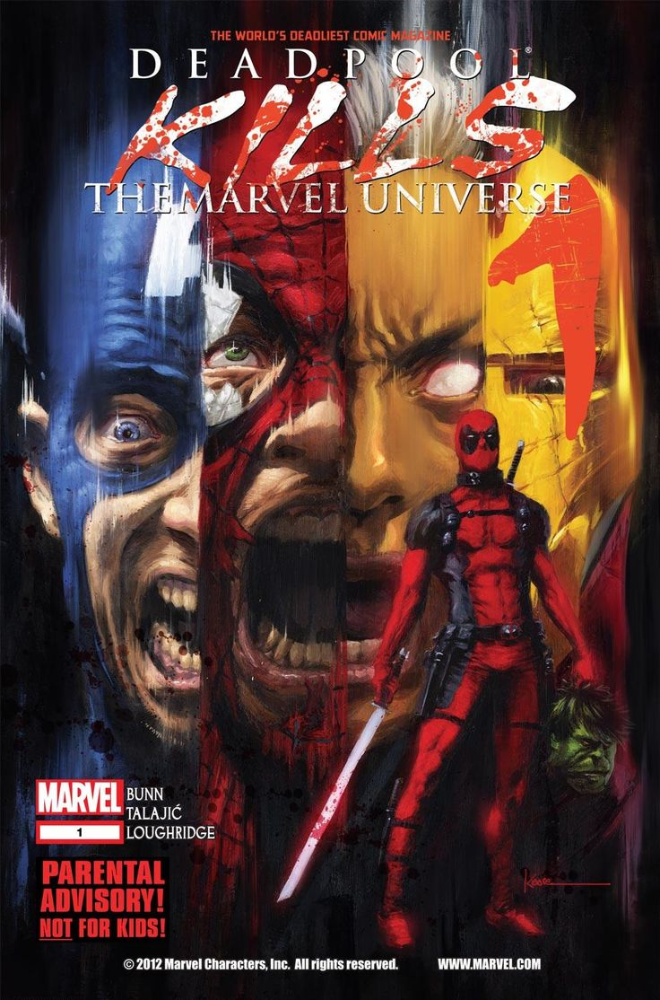

Deadpool sabe que es un personaje de cómic
Deadpool es famoso por romper la cuarta pared, es decir, por reconocer que vive en un cómic y hablar directamente con los lectores. Esta característica se volvió un rasgo distintivo del personaje desde los años 90, especialmente en la etapa escrita por Joe Kelly y más tarde por otros autores como Gail Simone.
Su conocimiento del medio en el que existe le permite hacer comentarios metatextuales, burlarse de la industria del cómic, y hasta referirse a los propios autores y editores. En sus historias, puede leer los cuadros de narración, interactuar con los bocadillos de pensamiento de otros personajes, y alterar su destino de maneras absurdas.
Esta ruptura de convenciones convirtió a Deadpool en una figura única. No es solo un antihéroe sarcástico con habilidades regenerativas: es una sátira viviente de los tropos del cómic de superhéroes. Su popularidad explotó precisamente por esta irreverencia, que conecta con lectores que disfrutan el humor autorreferencial y las críticas internas al propio medio.
← Volver a curiosidades de Marvel